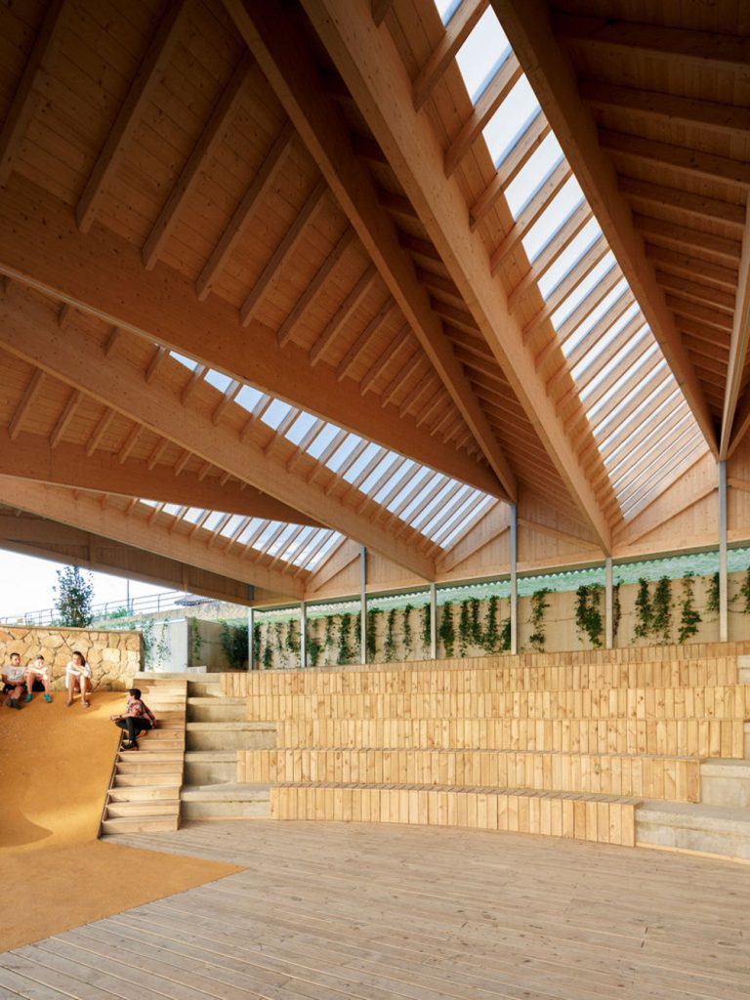

Usos de Nuestra Madera
- Construcción: Vigas, columnas, techos y estructuras.
- Carpintería: Muebles, puertas, ventanas y armarios.
- Acabados: Pisos, escaleras, zócalos y paneles decorativos.
- Exteriores: Terrazas, pérgolas, decks y revestimientos.
- Industria: Palets, embalajes y estructuras de soporte.
